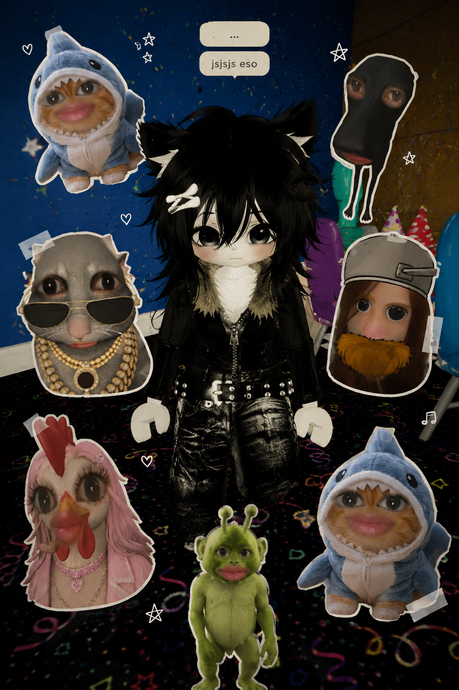
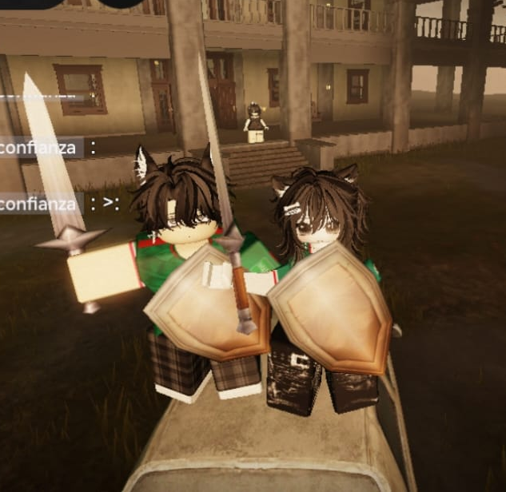
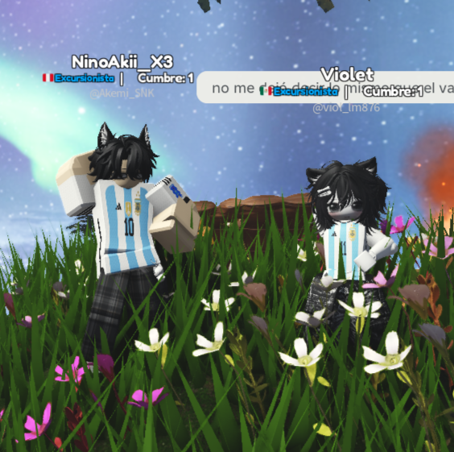
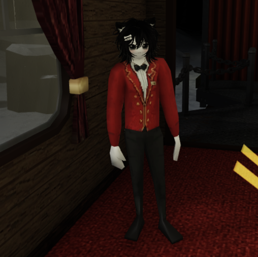

9 meses desde ese primer 25. ya es toda una tradición nuestra jaja

lo simple contigo se siente especial, ni sé por qué jsjs



tengo algo que decirte... y esta vez lo dejé por escrito, bien oficial jsjs
💌
abrir la carta
y para que quede clarísimo, hice algo nuestro con las estrellas
🍇
nuestra constelación
nuestra constelación 💜
toca cada uva
9 uvas, 9 meses, un solo racimo 🍇
✧
toca aquí 👀
💜
documento oficial · mes 9
MiniTestamento
de una persona muy afortunada de tenerte
Yo, Akemi, encontrándome en pleno uso de mis facultades mentales o al menos de las que me quedan después de tantas conversaciones hasta las 4 a. m. y por voluntad propia, bajo un estado considerablemente alto de cursilería, dejo constancia mediante este documento, de manera oficial, definitiva y completamente irrevocable, de lo siguiente:
Primero
Declaro, para quien tenga el honor o la curiosidad de leer esto, que ya llevamos 9 meses manteniendo nuestra pequeña tradición de cada 25. Y dejo constancia de que pienso seguir cumpliéndola durante mucho tiempo más, incluso si algún día mi creatividad para inventar páginas empieza a pedirme vacaciones jsjs. De alguna manera me las ingeniaré, porque ya se convirtió en una de esas pequeñas cosas nuestras que no quisiera dejar perder.
Segundo
Dejo constancia de que nunca una conversación contigo se me ha hecho larga. Ni siquiera aquellas pocas veces en las que seguimos hablando hasta que prácticamente empezaba a salir el sol, sin sueño y sin una verdadera razón para seguir despiertos más allá de querer continuar hablando. Quizá no fueron muchas, pero fueron suficientes para convertirse en recuerdos que valoro muchísimo y que, si pudiera, repetiría sin pensarlo.
Tercero
Reconozco, bajo juramento y sin posibilidad de apelación, que Roblox contigo siempre será mejor, ya sea ganando, perdiendo, haciendo cualquier tontería o entrando a un juego que probablemente abandonaríamos después jsjs. Y creo que ni siquiera se trata del juego en sí, sino de la persona con la que estoy jugando. Porque al final eres tú quien hace especiales esos momentos, y por eso siempre voy a recordar y valorar muchísimo todas esas horas que hemos pasado jugando juntos.
Cuarto
Doy fe de que escucharte hablar de tus BL's se ha convertido genuinamente en uno de mis momentos favoritos. Puede que muchas veces no entienda absolutamente todo, aunque poco a poco voy progresando, ya los ando leyendo, tenme paciencia UwU, pero me encanta escucharte hablar de ellos, ver cómo te emocionas contando algo que te gusta y cómo podrías pasar de un tema a otro sin darte cuenta. Esa emoción tuya termina contagiándome inevitablemente. Sé que es algo que forma parte de ti y, precisamente por eso, podría quedarme horas simplemente escuchándote hablar de ello.
Quinto
Certifico que hubo momentos en los que no estaba bien y tú estuviste ahí, incluso cuando nunca te pedí que lo estuvieras. Quizá para ti algunas de esas veces hayan sido pequeños gestos o simples conversaciones, pero para mí significaron muchísimo más de lo que probablemente imaginas. Es algo que guardo con muchísimo cariño y que no pienso olvidar, independientemente de cuánto tiempo pase o de las vueltas que termine dando la vida.
Sexto
Establezco oficialmente que todos los kilómetros que puedan existir entre nosotros y el hecho de que todavía no haya podido darte ni un solo abrazo en persona no cambian absolutamente nada de lo que significas para mí. Porque incluso desde lejos conseguiste ocupar un lugar que nadie más ha podido ocupar. Y hasta que se demuestre lo contrario, cosa que considero prácticamente imposible, sigues siendo, sin discusión, apelación ni competencia posible, mi persona favorita.
Cláusula final y voluntad última
Si algún día este corazón tuviera que dividirse entre otros universos, otras vidas y otros tiempos, quiero dejar algo claro: hay una parte enorme de él, quizá la más bonita y luminosa, que siempre va a llevar tu nombre, Morita. En esta vida, en este universo y en todos aquellos que todavía están esperando existir.
te amo muchísimo, muchísimo, muchísimo. eres mi persona favorita, literal. te amo 3000.